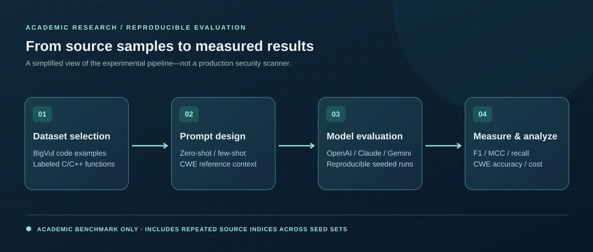

01 / PROJECT CASE STUDY · 2026
LLM Vulnerability Detection Benchmark
Benchmarking how language models identify vulnerable C/C++ functions—and where they fail.

01 / CONTEXT
The challenge
It is tempting to treat a confident model response as a reliable vulnerability assessment. I wanted to test that assumption with reproducible experiments rather than anecdotal examples.
02 / EXECUTION
My approach
- Built shared Python utilities for prompt construction, model API calls, structured response parsing, retries, and logging.
- Compared zero-shot, four-example few-shot, and CWE-reference-enhanced prompting across OpenAI, Anthropic, and Google models.
- Used ten seeded sets of 100 BigVul functions per model–prompt configuration and evaluated detection, CWE identification, latency, and cost.
03 / EVIDENCE
Outcomes & contribution
- Nine model–prompt configurations, with results tracked across seeded evaluations.
- Top observed F1: 70.4%; top observed Matthews correlation coefficient (MCC): 0.310.
- Observed weak CWE classification and model-specific tradeoffs between recall and false positives.
04 / TAKEAWAY
What I learned
Security-oriented AI systems need careful evaluation of detection quality, error patterns, and operating cost. More context did not consistently improve performance.
The repository is currently private. This overview describes research methods and aggregate findings without exposing unpublished code or datasets.
05 / SELECT RESULTS
Benchmark snapshot
Each model's best observed value among its tested prompting approaches. The best F1 and best MCC for a model need not come from the same configuration; these results should not be interpreted as a head-to-head production ranking.
| Model | F1 score | MCC |
|---|---|---|
| Claude Haiku | 70.4% | 0.310 |
| Google Gemini | 62.6% | 0.253 |
| OpenAI GPT | 56.0% | 0.206 |
The benchmark uses the BigVul test split and 10 reproducible seeded sets per configuration. One Gemini RAG run recorded 984 instead of 1,000 predictions due to intermittent API errors. The evaluation pipeline reports multiple metrics so that recall and false-positive tradeoffs are not hidden behind any single score.
Methodology note: ten seeded sets produce 1,000 evaluation slots per complete model–prompt run, with repeated BigVul indices across seeds. The few-shot implementation uses four labeled examples (two vulnerable, two clean), despite an outdated five-example reference in the repository README. These examples were drawn from the named test split, so the experiment is exploratory—not independent production validation.